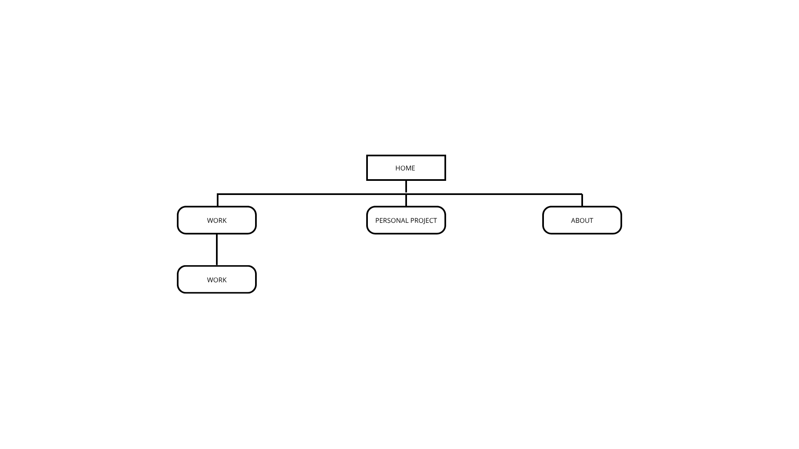

1. Idea e Obiettivi
L'idea di realizzare questo sito nasce dall’esigenza di avere una piattaforma digitale professionale dove raccogliere e mostrare la mia identità, il mio stile e i miei lavori fotografici. In quanto fotografo, videomaker e visual artist, ho bisogno di uno spazio che possa raccontarmi visivamente e che diventi un biglietto da visita per potenziali clienti e collaboratori. Il sito ha come obiettivo principale quello di presentare il mio lavoro a persone, aziende o agenzie interessate ai miei servizi fotografici o visivi. È un portfolio online che deve comunicare subito il mio stile e il mio approccio, senza spiegazioni superflue, lasciando che siano le immagini a parlare.
Oltre a mostrare i lavori, il sito ha anche la funzione di:
- permettere una navigazione semplice e intuitiva
- trasmettere la mia identità visiva personale e riconoscibile
- offrire un punto di contatto per chi desidera richiedere servizi o collaborazioni
Attualmente il sito non prevede la vendita diretta delle immagini o di altri prodotti, ma è concepito come vetrina. Tuttavia, tutte le immagini sono protette da copyright e non scaricabili, poiché l’utilizzo delle mie fotografie richiede una licenza o un pagamento.
2. Target
Il target del sito è ampio e diversificato:
- aziende o agenzie che cercano un fotografo o un visual artist per progetti commerciali o editoriali
- clienti privati interessati a servizi fotografici su commissione
- appassionati di fotografia e arte visiva
- professionisti del settore culturale e creativo, come curatori, galleristi o editori
Non ci sono limiti geografici per l’accesso; il sito è in lingua italiana, ma in futuro potrebbe essere tradotto in inglese per raggiungere un pubblico internazionale.
Il sito si rivolge sia a un pubblico esperto di fotografia che a utenti meno tecnici, grazie a una struttura chiara e a una navigazione intuitiva.
3. Benchmark
Prima di progettare il mio sito, ho analizzato diversi portfolio online di altri fotografi per comprendere quali fossero gli standard e i canoni da rispettare, soprattutto in termini di impatto visivo, essenzialità e immediatezza.
Mi sono ispirato a siti come:
- Andrea Bianchera
- Lorenzo Sorbini
- Amedeo Zancanella
- Documenting Culture
Da questi esempi ho tratto la convinzione che un portfolio fotografico debba avere:
- poche parole e descrizioni minime
- un design che non sovrasti le immagini, ma le valorizzi
- una navigazione semplice e fluida
- immagini di grande impatto, protagoniste della pagina
Alcuni elementi che ho scelto di evitare rispetto ad altri portfolio sono:
- testi eccessivamente lunghi o dettagliati
- menu complessi o multilivello
- animazioni troppo invasive che rallentano l’esperienza utente
4. Contenuti e Struttura del Sito
Il sito è composto da quattro sezioni principali:
Il sito è organizzato in quattro sezioni principali:
-
Home
- Pagina di benvenuto con una selezione di immagini che scorrono in evidenza
- Impatto visivo immediato per trasmettere subito il mio stile
-
Lavori su Commissione
- Raccolta dei progetti realizzati per clienti
- Organizzazione per categorie o clienti, con funzione di filtro e ricerca
-
Progetti Personali
- Sezione dedicata alle mie esplorazioni artistiche e sperimentali
- Permette di vedere il mio percorso creativo più intimo e libero
-
Chi Sono
- Pagina biografica con una breve presentazione di me e della mia filosofia visiva
- Spazio per raccontare la mia formazione, il mio approccio e i miei interessi artistici
In tutte le sezioni, le immagini possono essere visualizzate in galleria interattiva con possibilità di ingrandimento e scorrimento. È presente una barra di ricerca nella pagina dei lavori, oltre a filtri per categoria.
Non ci sono pulsanti di download: tutte le immagini sono protette da blocco al salvataggio.
5. Design
Il design è stato pensato per essere minimalista ed elegante, con una palette di colori neutri e tipografia semplice, lasciando che siano le immagini a emergere.
Elementi fondamentali del design:
- spazi bianchi ampi per dare respiro alle immagini
- assenza di elementi grafici superflui
- utilizzo di un font ispirato alla macchina da scrivere come richiamo alla mia passione per l’informatica
- predominanza del bianco e nero con qualche accento cromatico per richiamare la mia fotografia
Non utilizzo un logo grafico ma il mio nome e cognome come firma e marchio personale.
6. Tecnologie e Funzionalità
Il sito è stato sviluppato in HTML, CSS e JavaScript, ospitato su GitHub Pages. La struttura è semplice e facilmente aggiornabile.
Attualmente è ottimizzato per desktop, ma è in fase di sviluppo una versione responsive per mobile.
Funzionalità presenti:
- galleria interattiva con ingrandimento e scorrimento immagini
- barra di ricerca e filtri nella pagina dei lavori
- modulo di contatto via email
Non sono presenti funzioni di interazione sociale diretta (like, commenti, condivisioni), ma i link ai miei profili social sono disponibili nel footer.
In futuro vorrei aggiungere:
- una sezione e-commerce per preset fotografici o risorse digitali
- la possibilità di tradurre il sito in inglese
- un blog o una sezione di articoli per approfondire i progetti
7. Accessibilità e Usabilità
Il sito è pensato per essere accessibile a tutti, con una navigazione chiara, testi leggibili e immagini ottimizzate per la visualizzazione su schermo.
L’accesso non ha limitazioni geografiche e linguistiche (attualmente solo in italiano). La priorità è garantire una fruizione semplice e diretta dei contenuti visivi.
SEO di base è stato implementato per facilitare la reperibilità tramite motori di ricerca. Il sito sarà promosso anche tramite i miei canali social e materiali promozionali offline.
8. Sviluppi Futuri
- completamento della versione mobile responsive
- traduzione in lingua inglese
- implementazione di una sezione shop digitale
- aggiornamento periodico delle gallerie con nuovi lavori